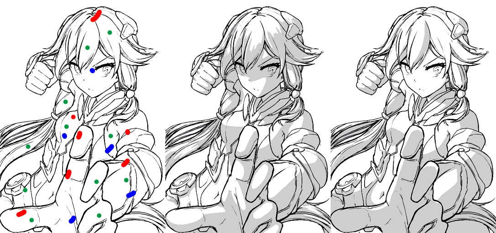

SmartShadow: Artistic Shadow Drawing Tool for Line Drawings
IEEE International Conference on Computer Vision (ICCV) 2021 Oral

From left to right: the input line drawing and user scribbles for our approach, the result of our approach, and the result from a real artist using Adobe PhotoShop. The user spends 2 minutes 13 seconds to obtain the middle result using our tools, while the artist spends 26 minutes 17 seconds to obtain the right result using Adobe PhotoShop.
Abstract
SmartShadow is a deep learning application for digital painting artists to draw shadows on line drawings, with three proposed tools. (1) Shadow brush: artists can draw scribbles to coarsely indicate the areas inside or outside their wanted shadows, and the application will generate the shadows in real-time. (2) Shadow boundary brush: this brush can precisely control the boundary of any specific shadow. (3) Global shadow generator: this tool can estimate the global shadow direction from input brush scribbles, and then consistently propagate local shadows to the entire image. These three tools can not only speed up the shadow drawing process (by 3.1× as experiments validate), but also allow for the flexibility to achieve various shadow effects and facilitate richer artistic creations. To this end, we train Convolutional Neural Networks (CNNs) with a collected large-scale dataset of both real and synthesized data, and especially, we collect 1670 shadow samples drawn by real artists. Both qualitative analysis and user study show that our approach can generate high-quality shadows that are practically usable in the daily works of digital painting artists. We present 30 additional results and 15 visual comparisons in the supplementary materiel.
Files
- Paper (PDF file, 17,101 KB)
See Also
- Supplementary Document - (PDF file, 36,721 KB) A document of additional results and engineering details.
- This project will become a part of the incoming SEPA studio.
Citation
Lvmin Zhang, Jinyue Jiang, Yi Ji, and Chunping Liu.
"SmartShadow: Artistic Shadow Drawing Tool for Line Drawings."
IEEE International Conference on Computer Vision (ICCV), June 2021.
BibTeX
@InProceedings{Shadow2021zhang,
author={Lvmin Zhang and Jinyue Jiang and Yi Ji and Chunping Liu},
booktitle={IEEE International Conference on Computer Vision (ICCV)},
title={SmartShadow: Artistic Shadow Drawing Tool for Line Drawings},
year={2021},
}